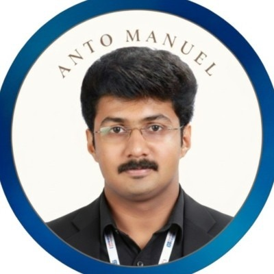

Assistant Professor, academic researcher, and product developer with 10+ years of expertise in nanotechnology, embedded systems, and biomedical instrumentation.

A multi-disciplinary researcher connecting materials science with electronics
I am an experienced Assistant Professor, academic administrator, and engineering product designer. Currently, I am pursuing my Ph.D. at the Indian Institute of Technology Goa (IIT Goa), focusing on state-of-the-art biosensor development utilizing MEMS (Micro-Electro-Mechanical Systems) and nanomaterials.
My work sits at the intersection of embedded hardware engineering, biomedical systems, and nanotechnology. Over the last decade, I have successfully developed various real-time systems, coordinated academic accreditations (NBA, NAAC), conceptualized heritage museums, and guided award-winning student projects.
Glassy carbon electrode sensors, carbon-MEMS photolithography, and microfluidics.
From schematic capture and PCB design to firmware and field-testing.
Three awards from IEEE & Springer conferences (2025, 2026) for biosensor & smart mask innovations.
Head of Biomedical Engineering Dept. (RIET), PG coordinator (M.Tech VLSI & Embedded Systems), and NSS Officer.
Coordinated construction of 8 houses for families in need and supervised 80+ social service campaigns.
Hands-on inspection and characterization of glassy carbon microstructures using a high-resolution optical profiler.
Strong educational background in VLSI, Embedded Systems, and Nanotechnology
Indian Institute of Technology Goa (IIT Goa), India
Research area covers glassy carbon microelectrodes, biosensor microfabrication using photolithography, COMSOL Multiphysics simulations, MEMS technology, and IoT integration for chemical/disease sensing.
St. Joseph's College of Engineering & Technology, M.G. University, Kerala
Focused on analog/digital IC design, embedded processors, FPGA, VHDL programming, and real-time operating systems. Completed with zero backlogs/history of arrears.
Maha Barathi Engineering College, Anna University, Chennai
Acquired strong foundational knowledge in analog electronic circuits, signal processing, electromagnetic fields, and communication theory. Zero history of arrears.
St. Thomas H.S.S, Pala, Kerala State Board
Specialized in Science: Biology, Mathematics, Physics, Chemistry, and Languages.
St. Michiles H.S, Pravithanam, Kerala State Board- HSE
Specialized in Science: Biology, Mathematics, Physics, Chemistry, and Languages.
Peer-reviewed books, book chapters, journals, and IEEE conference publications
Microsystem Technologies, Springer. Vol 31, pp. 3579–3592.
Read DOI ArticleWiley & Scrivener Publishing.
Wiley ReferenceIOP Publishing, Bristol, UK.
IOP Science LinkSpringer, Microsystem Technologies.
Research Square Preprint6th International Conference on Micro/Nanoelectronics Devices, Circuits, & System, NIT Silchar.
6th International Conference on Control, Communication and Computing (ICCC), Thiruvananthapuram.
Read Conference Paper5th International Conference on Micro/Nanoelectronics Devices, Circuits, & System, NIT Silchar.
Fourth International Conference on Advances in Electrical, Computing, Communication and Sustainable Technologies (ICAECT).
Read Conference PaperAnnual International Conference on Emerging Research Areas: International Conference on Intelligent Systems (AICERA/ICIS).
Read Conference PaperSJCET Journal of Engineering and Management, Vol 16, No. 1, pp. 42-53.
Hands-on cleanroom microfabrication at IIT Goa and participation in national science and technology conclaves
Semiconductor micro-probe station (TS150) setup for micro-scale electrical validation of carbon-MEMS electrodes.
Performing real-time IV and CV electrical profiling of fabricated glassy carbon biosensors in the lab.
Patterning customized micro-biosensor structural geometries inside the cleanroom laser writing unit.
Bench-testing the response profile of carbon-MEMS biosensors to targeted volatile gas compounds (acetone).
Represented RIET BME Department at the National Technology Day Conclave organized by CSIR-NIIST.
Attended technical talks on energy-efficient technologies for a sustainable future at C-SET.
Explored integrated circular platforms including green urea synthesis from waste gas.
Connected with research collaborators, industry leaders, and scientists on biomedical sensors.
Consultation with Vishnuraj IAS (Director of Industries & Commerce) on bridging tech-innovation and public needs.
Explored global energy transition exhibits and renewable technologies at the IEW exhibition pavilion.
Interacted with public sector energy innovators at the Engineers India Limited (EIL) booth.
Examined industrial gas sensing and HP-PSA pressure swing adsorption prototype demonstrators.
Led the RIET engineering student delegation to the India Energy Week expo at ONGC ATI, Goa.
Presented research work on glassy carbon design to Dr. Marc Madou, the pioneer of C-MEMS technology.
Engaged in a round-table technical review meeting on carbon-based micro- and nanotechnologies.
Demonstrated fabricated device experimental characterization profiles on laptop for validation feedback.
Group photo standing with Dr. Marc Madou and carbon nanotechnology researchers inside the lab.
Group photo with Dr. Marc Madou and researchers inside the seminar hall during the technology conclave.
Dr. Marc Madou delivering a lecture on EPOC point-of-care diagnostics and sensor technology constraints.
Lecturing on 3D carbon positives and enzyme-less redox amplification structures.
Comparing furnace-based C-MEMS carbonization (1200°C inert) against laser-induced graphene methods.
Recognitions in academic leadership, student project mentorship, and social innovation initiatives
Custom Android app interfacing with microcontroller hardware via Bluetooth for security authentication and ignition lock.
Engineered an embedded graphical user interface (GUI) on a custom GLCD for real-time safety metrics and cabin parameter tracking.
VLSI level design optimization of arithmetic adder units for low-power digital signal processing chips.
Active leadership in social initiatives, community building, and public welfare campaigns as an NSS Program Officer
Coordinating the construction of 7 homes for underprivileged families in Kerala, collaborating with State NSS and KCF support.
Hands-on restoration of hospital beds, stands, and furniture by NSS volunteers during special community camp programs.
Organizing newspaper collection drives with volunteers to raise funds for social outreach and community support initiatives.
Coordinating institutional blood donation camps in association with regional Lions Clubs to support local blood banks.
Selected hardware prototypes, systems integration, and IoT innovations
An intelligent system designed to predict cloudbursts in high-altitude zones. Awarded a prestigious development grant from the Center for Engineering Research and Development (CERD), Trivandrum.
A wearable health monitoring glove designed for remote patients. Integrates multi-sensor fusion (pulse, oxygen, temp) sending alerts autonomously via IoT protocols.
An IoT-enabled wireless sensor network for industrial water level monitoring, featuring a custom combined UI dashboard and automatic valve controllers.
A wearable IoT band tracking Air Quality Index (AQI). Predicts allergen triggers dynamically utilizing a built-in AI interface running on low-power hardware.
A solar-powered beach cleaning robot with autonomous navigation, computer vision detection, and mechanical collectors powered entirely by renewable energy.
Harnessing artificial intelligence for regional cloudburst forecasting, flood mapping, and warning triggers based on environmental sensors.
A decade in higher education, institutional leadership, and engineering product design
Key Responsibilities - HoD (i/c) (Biomedical Engineering):
Key Responsibilities - Deputy Controller of Examinations (DCoE):
Key Responsibilities - Electronics & Communication Engineering:
Key Responsibilities:
Key Responsibilities:
Specialized capabilities in engineering CAD, programming languages, and hardware
Key academic workshops, faculty development programs (FDPs), and technical summits attended
Attended the globally recognized energy expo representing RIET. Gained insights into cutting-edge clean energy innovations, renewable solutions, decarbonization strategies, and smart grid developments, facilitating discussions on future energy trends.
Represented the Department of Biomedical Engineering, RIET as HoD at the CSIR-NIIST Technofest cum Customer Meet. Engaged with scientists and industry leaders on healthcare technologies, biomedical sensors, and technology commercialisation.
Workshop organized by the School of Electrical Sciences, Indian Institute of Technology Goa (IIT Goa).
International Conclave on Generative AI and the Future of Education, organized by IHRD, Government of Kerala.
Pioneering Engineering & Medical Frontiers, organized by Marian Engineering College, Thiruvananthapuram.
Faculty Development Programme (FDP) organized by IIT Goa under the SPARC Scheme, funded by the Ministry of Education.
Workshop organized by CoE-PCI, Indian Institute of Technology Goa (IIT Goa).
AICTE-sponsored ATAL Six-day FDP, organized by the Department of ECE, SJCET Palai.
Endorsements from academic leadership and industrial management
HoD, Department of ECE
St. Joseph's College of Engineering & Technology, Palai
HOD, Department of Production
IPA INDIA Pvt Ltd, Bengaluru
Get in touch for research partnerships, academic opportunities, or engineering consults
Whether you are interested in carbon-MEMS electrode fabrication, biosensing microchips, IoT node designs, or academic workshops, feel free to drop a message or reach out via professional networks.